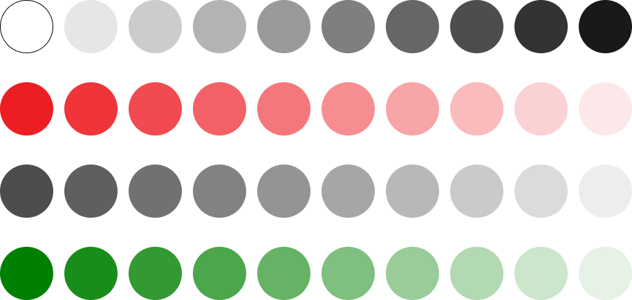

Case Study: UNIQLO Website - Redesign
Snapshot of UNIQLO
UNIQLO is a renowned global apparel retailer, celebrated for its simple, innovative, and high-quality clothing suitable for everyday life. Originating from Japan, the brand operates under Fast Retailing Co., Ltd., and has an expansive portfolio of over 2,000 stores around the world. UNIQLO has distinguished itself through its "LifeWear" concept—timeless, functional garments designed to meet the needs of everyone's daily wardrobe. The brand's commitment to continuous innovation is showcased in fabric technologies like HEATTECH for warmth and AIRism for breathability. With a philosophy that transcends fashion trends, UNIQLO focuses on providing durable, affordable, and universally appealing clothing options that exemplify their ethos: "Clothes that are constantly being innovated, bringing more warmth, more lightness, better design, and better comfort to people’s lives."
Rationale
The UNIQLO Canada website redesign was driven by a determination to enhance the user experience. As a regular UNIQLO shopper with a keen interest in design, I encountered several issues on their current site that made the shopping process challenging, prompting me to initiate a redesign.
A principal concern was the website's navigation menu. Once clicked, it would unfold to occupy the full screen, which blocked users from accessing other parts of the site. This design flaw could not only be inconvenient but also potentially cause customers to exit the site in annoyance. A redesign of the menu was essential to allow users to navigate the site with ease and without interruption.
The homepage was another area that needed work. It was packed with too many pictures and moving sliders, slowing everything down. The redesign introduces a cleaner layout that loads swiftly, ensuring smooth and effortless scrolling.
Ease of purchase is a vital component of the online shopping experience. Previously, the journey to the 'Add to Cart' button was hindered by its placement, compelling users to go through unnecessary scrolling. The redesign strategically positions CTA buttons, making them readily accessible and streamlining the shopping process.
The overall rationale behind the redesign is to provide a seamless, efficient, and accessible digital shopping experience that mirrors the elegance and simplicity of UNIQLO’s products.
Homepage scrolling
The homepage of the UNIQLO Canada website faced a scrolling issue that significantly impacted user experience. Pain points encountered:
- A dense and overwhelming layout with a multitude of images and active sliders.
- Mixed scrolling directions that led to a confusing and disorienting navigation experience.
- A challenging time locating specific items or categories due to the cluttered presentation.
These elements combined to create a suboptimal first impression of the website, as the homepage acts as the virtual storefront of the UNIQLO brand online. Visitors are greeted with a slow and cumbersome interface, deterring the ease of online shopping that customers expect.
Navigation Menu
The navigation menu of the UNIQLO Canada website presented a significant user experience issue:
- Full-Screen Overlay: The menu expanded to fill the entire screen when accessed, blocking the homepage and other content, causing user annoyance and interruption in the shopping experience.
- Non-Intuitive Layout: The menu's organization did not follow typical web navigation patterns, confusing users and making it difficult to navigate efficiently.
"Add to Cart" Button Accessibility
On the UNIQLO Canada website's product detail pages, users are facing a considerable inconvenience when attempting to complete a purchase:
- Excessive Scrolling: To reach the "Add to Cart" button, customers are required to scroll extensively, often three full screen lengths, which can be tedious and time-consuming.
- Hidden CTA: The critical call-to-action (CTA) button is buried beneath less essential information, forcing users to search for it and potentially causing confusion or frustration.
Website Color Theme
The website's color theme presents an accessibility challenge. While the use of black text over a white background is visually appealing and easy to read, the introduction of other color combinations reduces the overall accessibility. Several components display a low color contrast between the background and foreground, making it difficult for users, especially those with visual impairments, to distinguish and interpret the content. This oversight could lead to a diminished user experience and potential compliance issues.
Content Clutter
The website presents a significant challenge for users due to an overwhelming information overload, a proximity that's too close to comprehend the content effectively, and poor accessibility, which includes the use of exceptionally large fonts and unnecessary bold text. This cumulatively results in a frustrating user experience, making it difficult for visitors to efficiently navigate and locate the information they need, leading to cognitive strain and a lack of clarity in content prioritization.
Flows
Low Fidelity Wireframes
Color Palette
Typography
Iconography
Buttons & Inputs
High Fidelity Designs
Figma
Key Takeaways
- Organized content is crucial in aiding user navigation and enhancing the overall user experience.
- It's imperative to prioritize accessibility to ensure that content is reachable and usable by everyone.
- The choice of fonts plays a significant role in the readability and overall user experience.
- I enhanced my skills in creating wireframes and designs, understanding their importance in the design process.
- Additionally, I gained foundational insights into the process of prototyping, adding a new dimension to my design approach.
To Improve
- Further hone my prototyping skills as the working prototype had areas that weren't executed perfectly.
- Time management remains an area for growth, ensuring future projects are completed more efficiently.
- To better anchor future projects, I should invest more time in preliminary research before delving into the design phase.
- A deeper understanding and application of style guides will aid in ensuring design consistency and streamlining the design process in subsequent projects.